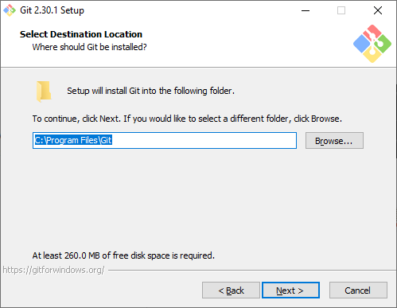
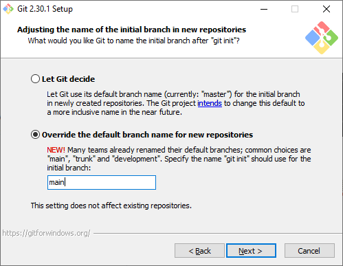

installing git
To install git (if you do not already have it installed, of course), first head to https://git-scm.com/downloads. Choose the version for your operating system, and download the installer. The next instructions will be for the Windows operating system; I am happy to provide additional instructions for other operating systems.
After reading & accepting the license terms, install git to the default location:
{kind=link}
Next, leave the selected components as-is:

Be sure to change the default editor from vim to something else (vim is somewhat notoriously confusing to use if you are not familiar with it). On Windows, I like Notepad++ but you may not already have this installed; in that case, change this to Notepad.

This step is optional, but as a result of recent discussions around the use of language, the default starting branch name for git will be changing from master to main in the near future, and git now gives you the option of choosing a different name in the meantime:
{kind=link}
- In addition to the graphical user interface (GUI) that we will install next, git can also be used as a command
line tool. git will install its own terminal (command line) emulator, but we can also configure it to work from the Windows command prompt, and with third-party software such as an integrated development environment (IDE).
- Many IDEs (such as PyCharm or Microsoft Visual Studio) come with built-in support for git, which can be extremely useful
when programming. To enable this, make sure to select the middle (Recommended) option below:

Keep the HTTPS transport backend using OpenSSL library, then click Next. Windows uses a different character encoding to represent a newline in text files compared to Unix-style systems (e.g., Unix, Linux, macOS), which can cause problems when switching between them. To help smooth things a bit, git provides the option to convert newline characters when checking out and committing files. I recommend leaving this setting as is:

Git will also install a terminal (command line) emulator called git Bash, which enables you to use some command-line tools that Windows does not include by default. Make sure the first option (Use MinTTY) is selected, then click Next:

Git will also ask how you want git pull to behave – I recommend keeping the default setting here as well:

Finally, you can leave the remaining options (choosing a credential helper, configuring extra options) as-is, clicking Next each time. When you come to the final window, you should see an Install button:

Once git is installed, open a command prompt window. Type where git at the command prompt and press Enter.
You should see the following output:

If you see an error message, post in the Discussion Forum and ask for help. If there are no errors, you can move on to the next step.